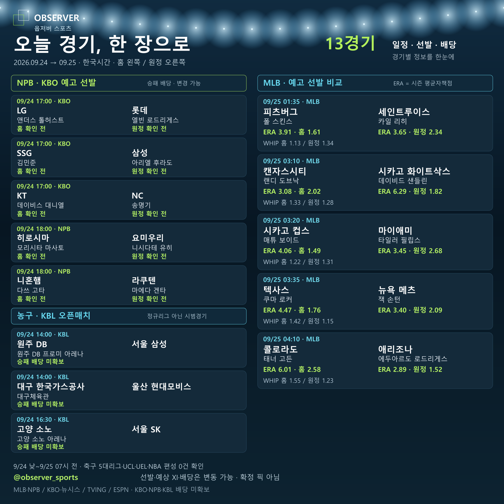

경기표를 읽는 데이터 사전
일정 카드에서 같은 줄에 보이는 숫자라도 의미와 기준 시점은 다릅니다. 오늘의 13경기 이미지를 예시로, 각 항목이 무엇을 뜻하고 무엇을 뜻하지 않는지 정리합니다.

항목별 해석
| 항목 | 읽는 기준 | 주의할 점 |
|---|---|---|
| KST | 한국시간 기준 경기 시작 시각 | 미국·일본 현지 날짜와 다를 수 있습니다. |
| 홈 / 원정 | 이 카드에서는 홈 왼쪽, 원정 오른쪽 | 다른 서비스의 나열 순서와 같다고 가정하지 않습니다. |
| 예고 선발 | 수집 시점에 안내된 투수 | 경기 직전 교체될 수 있습니다. 확정 출전 보장이 아닙니다. |
| ERA | 평균자책점 | WHIP와 같은 지표가 아니며 표본과 시즌을 함께 봅니다. |
| WHIP | 이닝당 허용한 안타와 볼넷의 합 | 한 지표만으로 다음 경기 성적을 단정하지 않습니다. |
| 승패 배당 | 수집 시점에 공개된 가격 | 변동하며 결과를 보장하지 않습니다. 미확보 항목을 추정하지 않았습니다. |
오늘 편성의 범위
KBO 3경기, NPB 2경기, MLB 5경기와 KBL 오픈매치 3경기를 담았습니다. KBL은 정규리그가 아닌 시범경기입니다. 오후 2시 시작 편성도 포함하므로 열람 시점에 이미 시작했을 수 있습니다.
뉴스는 별도로 확인하세요
손흥민의 MLS 이주의 골 수상과 오타니의 부상자명단 복귀는 일정·선발 카드와 다른 종류의 소식입니다. 수상 결과나 명단 복귀를 다음 경기 승리 또는 선발 확정으로 해석하지 않습니다.
공식 원문과 갱신 경로
이미지는 해당 일자의 기록입니다. 경기 직전 변경 사항은 공식 출처와 옵저버 텔레그램 후속 글을 함께 확인하세요.